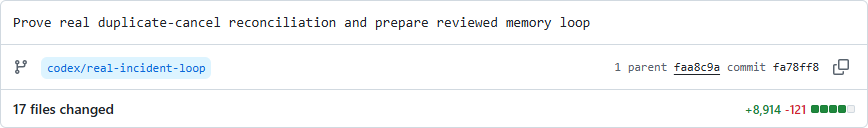
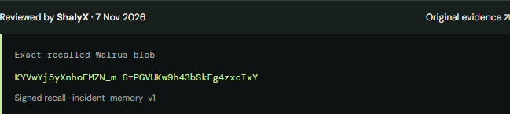
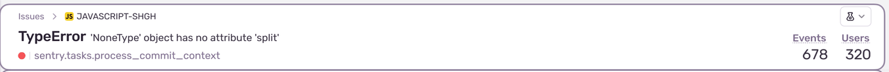
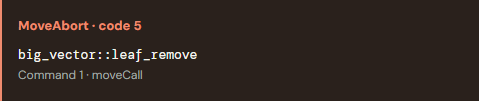
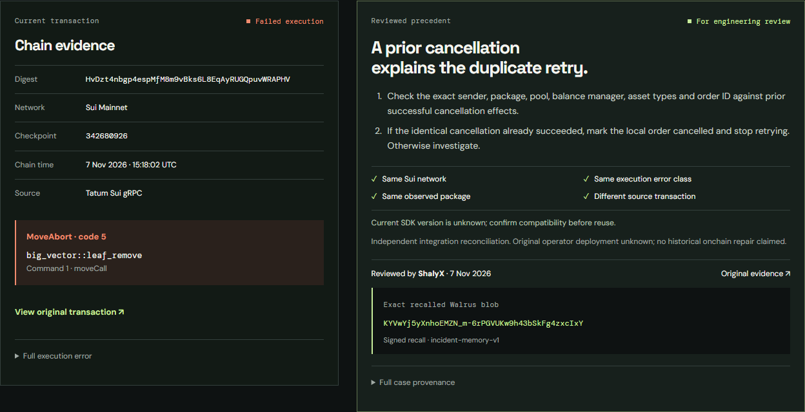
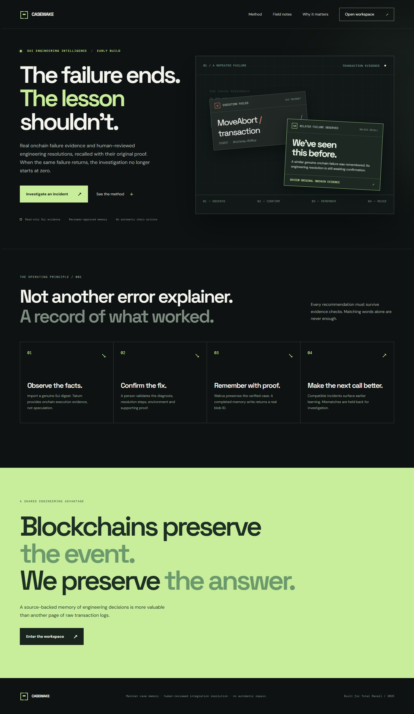

08 NOV 2026 · WORKING PRECEDENT
Keep the evidence.
Keep the reading path clear.
Rouse helps Sui engineers preserve reviewed resolutions and recall them for compatible failures. These references contribute narrow interaction and hierarchy patterns. The Rouse identity and the selected composition remain the targets.
A reviewed record keeps its origin.

Official source ↗ · checked 8 Nov 2026
A public artifact with its identity and change context. This is the case's actual source commit.
Borrow
Keep artifact identity, source link and human context adjacent. Secondary detail can expand beneath that anchor.
Avoid
Repository navigation, activity graphs and a full diff as the first view of a procedure.

Recorded approved case, not a live integration read. The source and stored record remain in one visual group.
Preserve full, inspectable identifiers and valid links. Do not reduce provenance to an unexplained checkmark.
Recognize the failure before reading the trace.

Official source ↗ · checked 8 Nov 2026
Header excerpt from the official documentation illustration. Counts belong to the Sentry example, not to Rouse.
Borrow
A concise error identity and its execution context remain visible before long raw detail.
Avoid
Resolve/archive controls, assignment queues, trend charts or a monitoring-product expansion.

Orange identifies the recorded failed execution. A transport outage or an unknown outcome receives its own neutral state.
Use Tatum evidence and existing normalization. This reference does not add a Sentry integration or change the resolution-memory product.
Disclose depth without hiding the decision.
Official source ↗ · checked 8 Nov 2026
The public component was opened and closed in the browser. The guide reserves disclosure for information needed by fewer readers.
Borrow
Native disclosure, stable labels and retained keyboard focus for secondary information.
Avoid
Hiding the procedure, matching reasons, reviewer or exact blob behind tabs, hover or an accordion.
Reconcile the exact order before retrying.
Confirm the earlier identical cancellation. Otherwise investigate.
KYVwYj5yXnhoEMZN_m-6rPGVUKw9h43bSkFg4zxcIxYExtended provenance
Evidence snapshot hash
113a57b302410a6d43a9ffab5d0569f0f48e32a4cc7cd367d5caf405bed94f03Observed Move package
0xcaf6ba059d539a97646d47f0b9ddf843e138d215e2a12ca1f4585d386f7aec3aInteraction specimen using the recorded Rouse case. No API call or new memory write.
Help a reviewer correct the right field.
Official source ↗ · checked 8 Nov 2026
The guide combines a summary with matching inline errors and links to affected inputs. The isolated source example uses placeholder links.
Borrow
A correction summary, consistent inline wording and a focus path to the invalid input.
Avoid
Using form-validation language for an onchain failure, unknown execution or an unavailable gateway.
Interaction specimen only. Input is not submitted, stored or used as approval.
The synthesis belongs to Rouse.

Borrow
Current evidence and earlier judgment occupy comparable space. The exact record and its limits remain visible.
Avoid
A collage of GitHub chrome, Sentry tools and government styling.
Mobile reading order
Stack the paired desktop evidence without hiding meaning. Long identifiers wrap; supplemental links and disclosures retain touch targets.
Reference images are research material, not assets for the public landing page. Production visuals come from the Rouse interface and approved case.

Leave the tilted example behind.
Preserve the functioning read/recall journey and separate workspace route. Replace the tilted cards, stale awaiting-confirmation example and repeated oversized slogans.
The selected page shows a bounded reviewed resolution with its source. It makes the general memory value visible without turning one cancellation incident into the product.
Own product baseline captured 8 Nov 2026. This is an explicit anti-reference, not a template.
Five rules carried forward.
Four external functional references, two internal targets and one explicit anti-reference. Linear's incomplete body render and Stripe Workbench were not selected. This board adds no product integration, new feature or production dependency.
Next: Phase 18 visual asset strategy. Final app implementation, motion QA and production release remain separate.